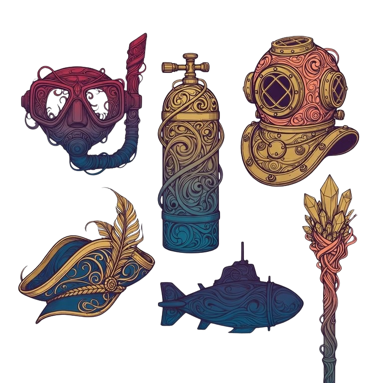
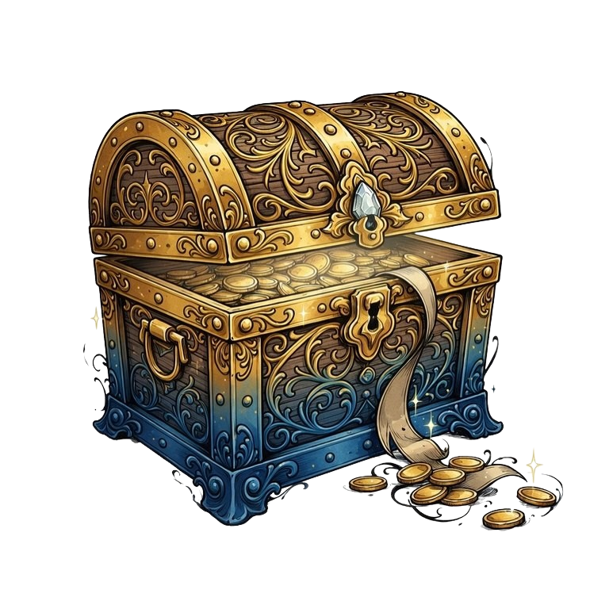
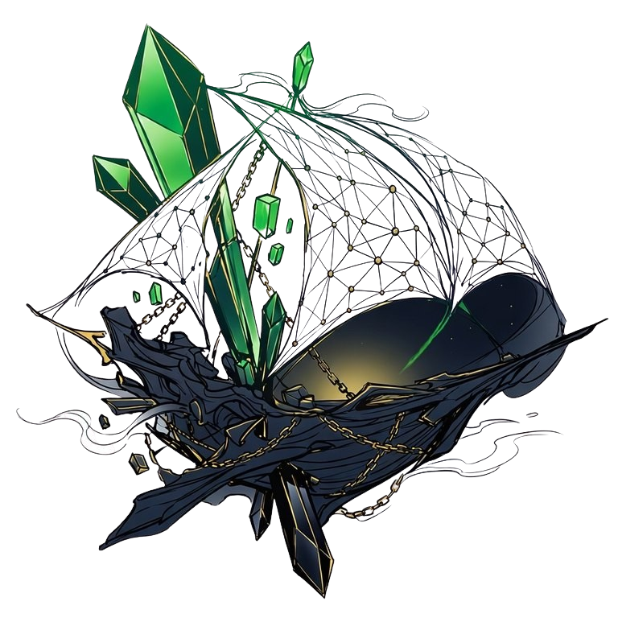

44,444 hand-drawn salvage records · Chia blockchain · blind mint
The ship went down in the bear market. The tourists left. The press wrote the obituary. But the cargo — the memes, the tools, the culture, the builders — is still down there.
Hope never sinks.

Buy a Dive Pass — snorkel to submarine to the abyss. The deeper the gear, the deeper you go, and the stranger what you find becomes.

Every pass is a treasure chest holding a randomized haul. Chest size, Depth Luck, and rarity floors are published before mint — and provable after.

What you surface is yours: characters, ships, artifacts of a civilization that refused to die. Rarity = depth. Grails live in the Hadal zone.
Six chapters. One descent. The lore, the mint tiers, the odds, and the art all follow the same spine — down.
Fixed prices. Published ranges. No hidden math — every number below is generated from the same config the mint engine runs on.
| Tier | Zone | Price | Chest | E[haul] | Eff. / NFT | Passes | Depth Luck | Floor |
|---|
Depth Luck multiplies Epic+ odds. Floors are pity guarantees — the minimum rarity a chest can contain. The Wizard of the Deep pass is not for sale; it is earned through the lore puzzle during mint. 5 grails are seeded into the 5 Admiral chests; 27 more hide in random chests across tiers 4–8. Even a Deep Sea Diver can strike a grail.
Blind mints usually mean blind trust. Ours is a commit–reveal scheme you can check with a hundred lines of code.
HMAC-SHA256(salt, your payment coin id) —
deterministic, per-purchase, tied to an on-chain identifier neither side can pick.python engine/chest_roller.py verify \
--manifest your_chest.json --salt-file revealed.salt
VERIFIED: manifest reproduces exactly from salt + coin_idThe roll engine is open source in this repository, deterministic to the byte across machines, and locked by golden-vector tests. Change one weight, one placement, one line — the published hash breaks.
"Ships that never sailed are scuttled."
When the mint window closes, all unminted supply is permanently destroyed — publicly, on-chain, with ceremony. The final collection is exactly what the divers salvaged. Every pass that goes unsold makes every held NFT scarcer. The ocean keeps what nobody came back for.
The exact procedure — final count publication, generator seed retirement, reserve burn — is published before mint opens.
Forty-four hand-crafted 1/1s in eleven themed sets of four — The Four Admirals, The Wizards of the Deep, The Lighthouse Keepers, The Ghost Captains, The Torn… Named, lore-canon, and seeded where the spec says they are. 44 grails in a 44,444 supply. The symbolism is the point.
Diamond Hands isn't a random trait here — it's a record. Badges like Never Jumped, Still Here, and Last Man Aboard are earned by verifiable behavior after mint: holding through reveal, holding six months, minting in the final scuttle hour. Worn forever. Never rolled.
Chia. You'll accept your chest as an offer file — the Sage wallet handles this in a couple of clicks, and the mint site walks you through setup in about 60 seconds. A manual offer-file download is always available as a fallback.
A treasure chest containing a randomized number of NFTs within your tier's published range. Deeper tiers get more NFTs per XCH, wider upside, multiplied Epic+ odds (Depth Luck), and minimum-rarity floors. All odds are published.
Your chest is derived from your payment coin's on-chain id and a salt we committed to before mint. After reveal, you can recompute your entire chest yourself and compare hashes. See Provably Fair.
Then the ocean keeps the rest. All unminted supply is destroyed on-chain at close (The Scuttling), so undersell makes the collection scarcer, not overhung. We budget assuming partial sellout — honestly, publicly.
5% on-chain royalty, minted from the project DID. A 444-NFT treasury reserve (team, collabs, contests) is disclosed up front and included in the public math.
No. Tom Bepe is an original, legally distinct amphibian everyman — original design, original proportions, no protected assets. He cries in a lifeboat on the surface and welds a new keel by wizard-light at 6,000 meters. Same guy. Full arc.